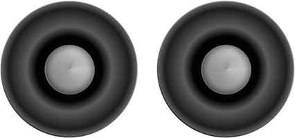

Docs
Everything You Need to Know
Dispatcher
Intro
Truck's Dispatcher enables decoupling of components. The dispatch system has two parts: a dispatcher and a receiver. You define a reciever with a handle, which is its address, and a callback to execute when a dispatch is received. The dispatcher can optionally send some data with a dispatch. When this happens, the receiver can respond by doing something with the data it received. Or you could have a receiver perform some other task.
Truck's controllers are based on the behavior of the dispatcher. Dispatches enable Truck to perform data binding, etc. Dispatchers are delivery agents that their handles to deliver data. That's all they do. Receivers are the workers who do something when the dispatcher makes a delivery. Receivers are very patient. They won't do anything until a dispatcher delivers.
If you need to, you can cancel a receiver. Cancelation is permanent. Once canceled, a receiver will not react to a dispatcher. It's like nobody is home when a delivery agent arrives. Cancelation does not eliminate the receiver. It eliminates the handle and callback the receiver uses, making it unable to do anything when a dispatch is made. Remember, cancelation permanently disables a receiver. Dispatchers can continue to work, but canceled receivers will not react to the dispatches.
A receiver can handle deliveries from multiple dispatchers. Receivers can react differently depending on what the dispatcher delivers. One receiver might only accept string data. Another might only want arrays. Or a receiver could do different things depending on the kind of the data delivered - eat the pizza, throw out the junk mail.